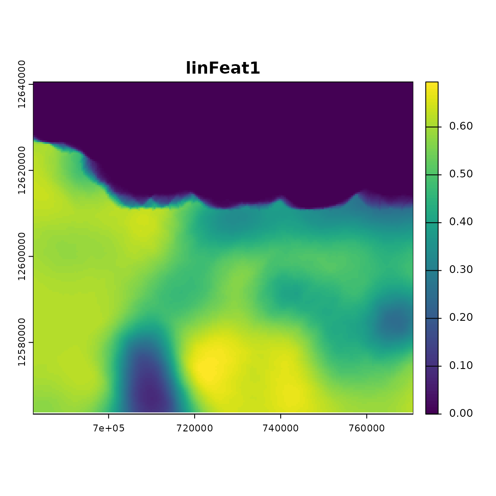
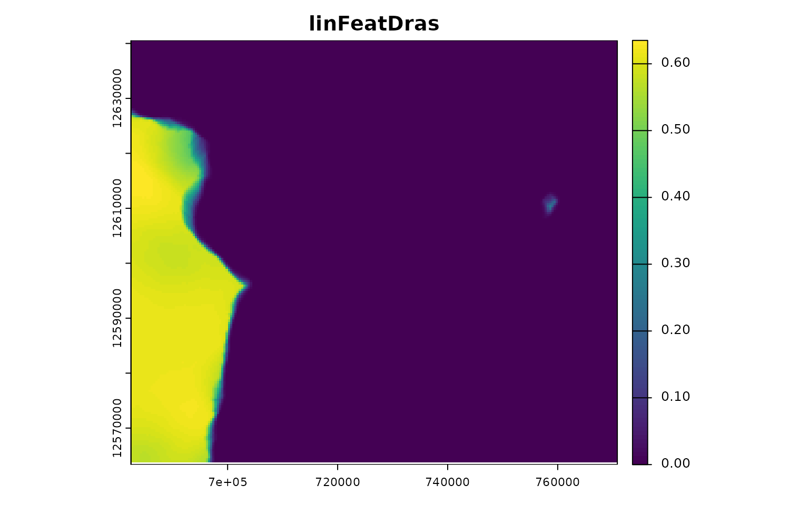
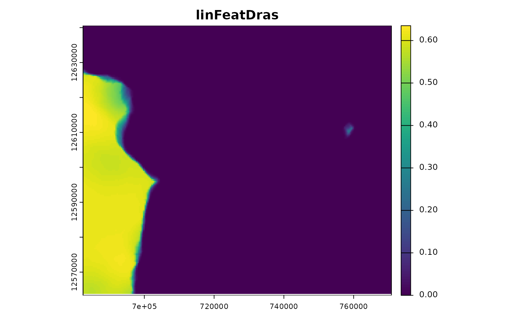
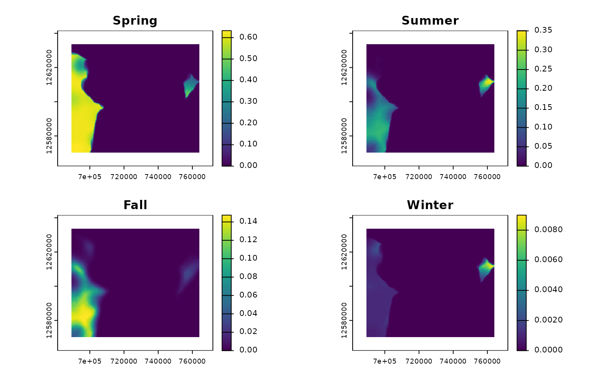

Using caribouHabitat
Using_caribouHabitat.RmdIntroduction
This vignette gives details on the use of the caribouHabitat function. See vignette("Getting_started", package = "caribouMetrics") for an overview of the function. This function implements the caribou resource selection probability functions (RSPF) described in Hornseth and Rempel, 2016 in R. They were previously written in LSL and a goal of this package is to make them more accessible to a wider range of users.
library(caribouMetrics)
library(dplyr)
#>
#> Attaching package: 'dplyr'
#> The following objects are masked from 'package:stats':
#>
#> filter, lag
#> The following objects are masked from 'package:base':
#>
#> intersect, setdiff, setequal, union
library(raster)
#> Loading required package: sp
#>
#> Attaching package: 'raster'
#> The following object is masked from 'package:dplyr':
#>
#> select
library(sf)
#> Linking to GEOS 3.8.0, GDAL 3.0.4, PROJ 6.3.1
pthBase <- system.file("extdata", package = "caribouMetrics")Simple Example
The example data set loaded below includes a small area in the Nipigon caribou range that we will use as an example. The provincial land cover (PLC) data are converted to resource types based on look up tables provided in the package.
# load example data and classify plc into Resource Types
landCoverD = raster(file.path(pthBase, "landCover.tif")) %>%
reclassPLC()
eskerDras = raster(file.path(pthBase, "eskerTif.tif"))
eskerDshp = st_read(file.path(pthBase, "esker.shp"), quiet = TRUE, agr = "constant")
natDistD = raster(file.path(pthBase, "natDist.tif"))
anthroDistD = raster(file.path(pthBase, "anthroDist.tif"))
linFeatDras = raster(file.path(pthBase, "linFeatTif.tif"))
projectPolyD = st_read(file.path(pthBase, "projectPoly.shp"), quiet = TRUE,
agr = "constant")
linFeatDshp = st_read(file.path(pthBase, "linFeat.shp"), quiet = TRUE, agr = "constant")
roadsD = st_read(file.path(pthBase, "roads.shp"), quiet = TRUE, agr = "constant")
railD = st_read(file.path(pthBase, "rail.shp"), quiet = TRUE, agr = "constant")
utilitiesD = st_read(file.path(pthBase, "utilities.shp"), quiet = TRUE, agr = "constant")caribouHabitat will prepare the data, process it into the explanatory variables in the Hornseth and Rempel RSPF models and then calculate the probability of habitat use in each season at each location. The function can be run in several different ways, but the simplest is to provide spatial objects for each data set.
carHab1 <- caribouHabitat(
landCover = landCoverD ,
esker = eskerDras,
natDist = natDistD,
anthroDist = anthroDistD,
linFeat = linFeatDras,
projectPoly = projectPolyD,
caribouRange = "Nipigon"
)
#> cropping landCover to extent of projectPoly
#> cropping natDist to extent of projectPoly
#> cropping anthroDist to extent of projectPoly
#> cropping esker to extent of projectPoly
#> cropping linFeat to extent of projectPoly
#> resampling linFeat to match landCover resolution
#> resampling esker to match landCover resolution
#> Applying moving window.
plot(carHab1, season = c("Fall", "Summer"))
#> Registered S3 methods overwritten by 'stars':
#> method from
#> st_bbox.SpatRaster sf
#> st_crs.SpatRaster sf
Example with padding
In most cases you will have a project area that is smaller than the environmental data sets available. For our example we will create this project area by selecting a rectangle inside our example data set.
ext <- raster::extent(landCoverD) - 30000
projectPolyD2 <- st_bbox(ext) %>% st_as_sfc() %>% st_as_sf() %>% st_set_crs(st_crs(landCoverD))The information that is outside our project area is still useful for preventing edge effects in our results. To use this data you can set padProjPoly = TRUE in the caribouHabitat call which will set a buffer around the project area based on the size of the moving window used to scale variables for that range.
carHab2 <- caribouHabitat(
landCover = landCoverD,
esker = eskerDshp,
linFeat = linFeatDshp,
projectPoly = projectPolyD2,
caribouRange = "Nipigon",
padProjPoly = TRUE
)
#> cropping landCover to extent of projectPoly
#> cropping esker to extent of projectPoly
#> old-style crs object detected; please recreate object with a recent sf::st_crs()
#> cropping linFeat to extent of projectPoly
#> old-style crs object detected; please recreate object with a recent sf::st_crs()
#> Applying moving window.
tmap::qtm(landCoverD, raster = "black")+
tmap::tm_shape(carHab2@landCover)+
tmap::tm_raster(style = "cat",
palette = tmaptools::get_brewer_pal("Accent", n = 9, plot = FALSE),
labels = resTypeCode$ResourceType,
title = "PLC")+
tmap::tm_legend(bg.color = "white", legend.outside = TRUE)+
tmap::qtm(carHab2@projectPoly, fill = NULL, borders = "black")
The black area on the map above shows the extent of the original landCover data, the raster shows the landCover data that has been cropped to a buffer around projectPoly which is the black rectangle.
Next we will demonstrate the importance of setting padProjPoly = TRUE, if the data is available, by showing the difference in the results for padding using the data outside the project area, no padding, and using 0s to pad the area outside the project using padFocal = TRUE
carHab3 <- caribouHabitat(
landCover = landCoverD,
esker = eskerDshp,
linFeat = linFeatDshp,
projectPoly = projectPolyD2,
caribouRange = "Nipigon"
)
#> cropping landCover to extent of projectPoly
#> cropping esker to extent of projectPoly
#> old-style crs object detected; please recreate object with a recent sf::st_crs()
#> cropping linFeat to extent of projectPoly
#> old-style crs object detected; please recreate object with a recent sf::st_crs()
#> Applying moving window.
carHab4 <- caribouHabitat(
landCover = landCoverD, esker = eskerDshp,
linFeat = linFeatDshp,
projectPoly = projectPolyD2,
caribouRange = "Nipigon",
padProjPoly = FALSE,
padFocal = TRUE
)
#> cropping landCover to extent of projectPoly
#> cropping esker to extent of projectPoly
#> old-style crs object detected; please recreate object with a recent sf::st_crs()
#> cropping linFeat to extent of projectPoly
#> old-style crs object detected; please recreate object with a recent sf::st_crs()
#> Applying moving window.
st_area(projectPolyD2)
#> 2991937500 [m^2]
plot(carHab2, season = "Fall", title = "Pad with data outside project",
raster.breaks = c(0, 0.025, 0.05, 0.1, 0.15, 0.2, 0.3, 0.4, 0.5, 1),
layout.legend.outside = TRUE)+
tmap::qtm(carHab3@projectPoly, fill = NULL, borders = "red",
shape.is.master = TRUE)
plot(carHab3, season = "Fall", title = "No padding",
raster.breaks = c(0, 0.025, 0.05, 0.1, 0.15, 0.2, 0.3, 0.4, 0.5, 1),
layout.legend.outside = TRUE)+
tmap::qtm(carHab3@projectPoly, fill = NULL, borders = "red",
shape.is.master = TRUE)
plot(carHab4, season = "Fall", title = "Pad with 0 outside project",
raster.breaks = c(0, 0.025, 0.05, 0.1, 0.15, 0.2, 0.3, 0.4, 0.5, 1),
layout.legend.outside = TRUE)+
tmap::qtm(carHab3@projectPoly, fill = NULL, borders = "red",
shape.is.master = TRUE)
The difference is large in this example because the project area is very small compared to the window size. The example with no padding is the default because it prevents users from relying on questionable results. The example padded with data outside the project polygon is the preferred option since it makes use of all available information but it is not the default because it should only be used when the data provided is larger than the project area. The version where cells are padded with 0s gives results but they can be misleading. Based on the land cover data in the previous map you can see that there is an area with resource type LGOP near the border of projectPoly on the top right. LGOP has a strong positive effect on caribou habitat use so in the version padded with data cells on the top right edge have higher probability of use than in the version with 0s as padding. In general the predictions are lower around the edges in the version with 0s as padding because the cells outside the projectPoly are 0 when taking the weighted sum of values in the window. Therefore it is highly recommended to provide data for the area around the project and to use padProjPoly = TRUE.
Example with other inputs
As mentioned above caribouHabitat can be called in several different ways. You can provide the data as filepaths instead of spatial objects, you can provide the eskers and linear features as vector files which will be converted to rasters, and you can provide a list of sf objects to be combined into the linear features raster.
carHab4 <- caribouHabitat(
landCover = landCoverD,
esker = eskerDshp,
natDist = natDistD,
anthroDist = anthroDistD,
linFeat = list(roads = roadsD, rail = railD, utilities = utilitiesD),
projectPoly = projectPolyD,
caribouRange = "Nipigon"
)
#> cropping landCover to extent of projectPoly
#> cropping natDist to extent of projectPoly
#> cropping anthroDist to extent of projectPoly
#> old-style crs object detected; please recreate object with a recent sf::st_crs()
#> old-style crs object detected; please recreate object with a recent sf::st_crs()
#> Applying moving window.Example of updating an existing object
In some cases you may want to update an existing object with new data for one or more of the input data sets. This can be done using updateCaribou.
For example we can create several data sets that show roads expanding across our study area and what effect this will have on caribou habitat. Since the only data set that is changing is the linear features it will be faster to use updateCaribou rather than caribouHabitat.
# Create series of data sets
ext <- raster::extent(linFeatDras)
height <- dim(linFeatDras)[1]/4
linFeatDras1 <- linFeatDras[1:height, , drop = FALSE] %>%
raster::extend(linFeatDras, value = 0)
linFeatDras2 <- linFeatDras[1:(height*2), , drop = FALSE] %>%
raster::extend(linFeatDras, value = 0)
linFeatDras3 <- linFeatDras[1:(height*3), , drop = FALSE] %>%
raster::extend(linFeatDras, value = 0)
par(mfrow = c(2, 2))
plot(linFeatDras1)
plot(linFeatDras2)
plot(linFeatDras3)
plot(linFeatDras)
# Run caribouHabitat to process all the data once
# Use Missisa range because roads have a larger effect in that model
carHabLF1 <- caribouHabitat(
landCover = landCoverD,
esker = eskerDras,
natDist = natDistD,
anthroDist = anthroDistD,
linFeat = linFeatDras1,
projectPoly = projectPolyD,
caribouRange = "Missisa",
padFocal = TRUE
)
#> cropping landCover to extent of projectPoly
#> cropping natDist to extent of projectPoly
#> cropping anthroDist to extent of projectPoly
#> cropping esker to extent of projectPoly
#> cropping linFeat to extent of projectPoly
#> resampling linFeat to match landCover resolution
#> resampling esker to match landCover resolution
#> Applying moving window.
# Run updateCaribou with the new linFeat raster
carHabLF2 <- updateCaribou(carHabLF1, newData = list(linFeat = linFeatDras2))
#> cropping linFeat to extent of projectPoly
#> resampling linFeat to match landCover resolution
#> Applying moving window.
# compare results
plot(carHabLF1, season = "Spring", title = "linFeat 1", raster.breaks = 0:10/10,
legend.outside = TRUE)
plot(carHabLF2, season = "Spring", title = "linFeat 2", raster.breaks = 0:10/10,
legend.outside = TRUE)
You can see that there is a lower probability of caribou habitat use when there are more roads (linFeat 2).
Example using Iteration
To go through a large number of updated data sets we can use the purrr package to iterate over different sets of data
linFeatScns <- lst(linFeatDras2, linFeatDras3, linFeatDras)
# using carHabLF1 created above we run the update for all three datasets
linFeatResults <- purrr::map(
linFeatScns,
~updateCaribou(carHabLF1, newData = list(linFeat = .x))
)
#> cropping linFeat to extent of projectPoly
#> resampling linFeat to match landCover resolution
#> Applying moving window.
#> cropping linFeat to extent of projectPoly
#> resampling linFeat to match landCover resolution
#> Applying moving window.
#> cropping linFeat to extent of projectPoly
#> resampling linFeat to match landCover resolution
#> Applying moving window.
purrr::walk2(c(carHabLF1, linFeatResults),
c("linFeatDras1", names(linFeatResults)),
~plot(.x, season = "Spring", title = .y, raster.breaks = 0:10/10,
legend.outside = TRUE) %>% print())

 

It is also possible to change just the caribouRange attribute without recomputing the entire function using the updateCaribou function. In the example below the coefRange is changed from Nipigon to Missisa and the predictions are re-calculated using the coefficients from the Missisa model
carHab1@attributes$caribouRange$coefRange <- "Missisa"
misCoef <- updateCaribou(carHab1)
plot(misCoef)
Example with different coefficients
Different coefficients can be supplied using the coefTable argument and if those coefficients are standardized the data can be standarized by supplying the argument doScale = TRUE.
carHabStd <- caribouHabitat(
landCover = landCoverD,
esker = eskerDras,
natDist = natDistD,
anthroDist = anthroDistD,
linFeat = linFeatDras,
projectPoly = projectPolyD,
caribouRange = "James Bay",
coefTable = coefTableStd,
doScale = TRUE
)
#> cropping landCover to extent of projectPoly
#> cropping natDist to extent of projectPoly
#> cropping anthroDist to extent of projectPoly
#> cropping esker to extent of projectPoly
#> cropping linFeat to extent of projectPoly
#> resampling linFeat to match landCover resolution
#> resampling esker to match landCover resolution
#> Applying moving window.Binary usage
You can also determine a binary high or low caribou use result either by season or for the range as a whole using calcBinaryUse. The high/low use thresholds were provided by Rempel et al (2021).
binCarHab1 <- calcBinaryUse(carHab1)
binCarHab1Seasons <- calcBinaryUse(carHab1, bySeason = TRUE)
tmap::qtm(binCarHab1)
tmap::qtm(binCarHab1Seasons)
#> Warning in if (cls == "log") {: the condition has length > 1 and only the first
#> element will be used
#> Warning in if (cls == "log") {: the condition has length > 1 and only the first
#> element will be used
#> Warning in if (cls == "log") {: the condition has length > 1 and only the first
#> element will be used
#> Warning in if (cls == "log") {: the condition has length > 1 and only the first
#> element will be used
References
Rempel, R.S., Carlson, M., Rodgers, A.R., Shuter, J.L., Farrell, C.E., Cairns, D., Stelfox, B., Hunt, L.M., Mackereth, R.W. and Jackson, J.M., 2021. Modeling Cumulative Effects of Climate and Development on Moose, Wolf, and Caribou Populations. The Journal of Wildlife Management.
Hornseth, M.L. and Rempel, R.S., 2016. Seasonal resource selection of woodland caribou (Rangifer tarandus caribou) across a gradient of anthropogenic disturbance. Canadian Journal of Zoology, 94(2), pp.79-93. https://doi.org/10.1139/cjz-2015-0101